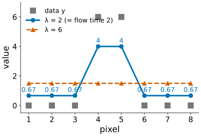
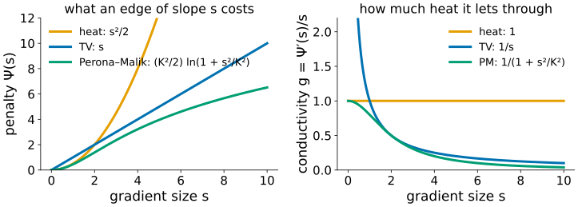
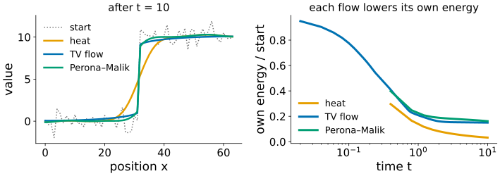
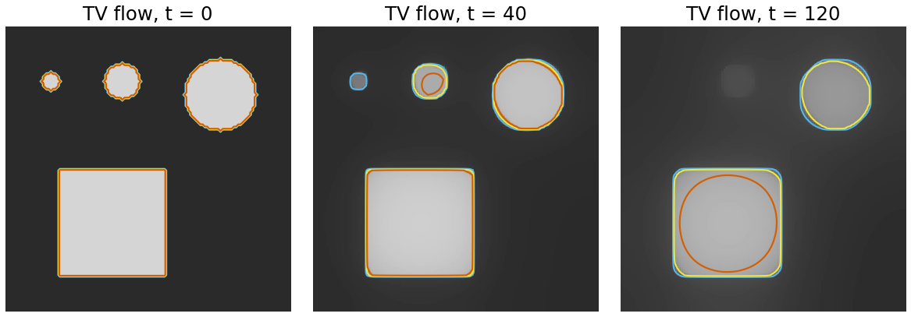
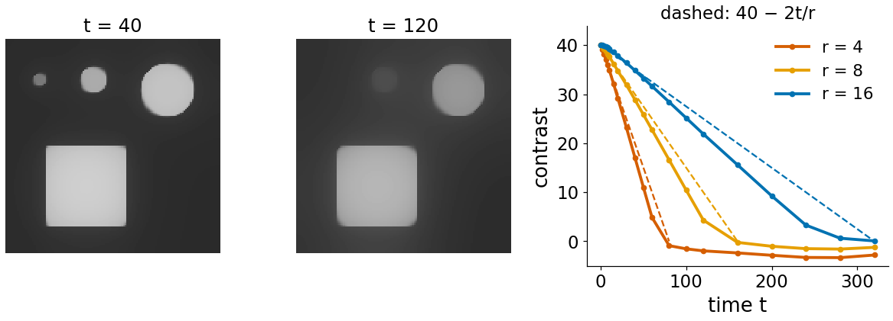
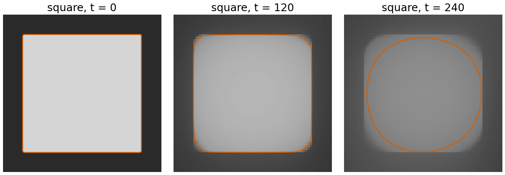
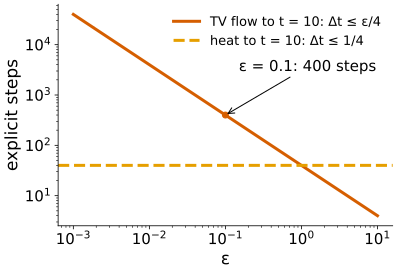
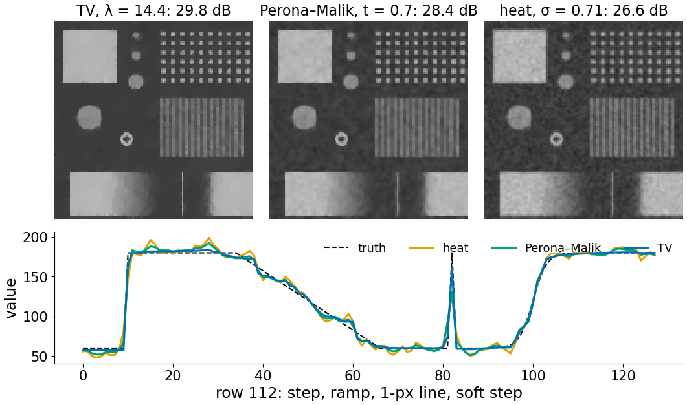

Two units ago: heat flow. Last unit: Perona–Malik. Both look like rules (“move towards your neighbours, but not across edges”). Here they become one idea: go downhill on an energy, and a third member of the family, total variation flow.
Slides titled The math give the formulas and proofs; the ideas are complete without them.
The total variation of an image adds up the size of the gradient, \sum |\nabla u| (the Ising day, quadratic and TV smoothing).
By hand, y = (0, 0, 0, 6, 6, 0, 0, 0), \lambda = 2: the middle plateau drops by 2 to 4, the outer ones rise by 2/3; the steps stay sharp.

Each smoother says what a gradient of size s costs, \Psi(s):
The conductivity of the flow is g = \Psi'(s)/s (right): 1 for heat, 1/s for TV, g_2 for Perona–Malik. The same “data + λ · penalty” pattern as in regularisation.

Each flow changes the image in the direction that lowers its own energy fastest (gradient descent):
A convex energy (heat, TV) has one minimum and a well-behaved flow towards it.

Think of the image as a stack of level lines (iso-contours). Under TV flow each level line moves inwards by its curvature (1/\text{radius}), the curve-shortening flow of the level-set day:
The edge position hardly changes; what changes is the height of the regions.

A bright disc of radius r and contrast c on a flat background:
Radius 4, 8, 16, contrast 40: gone at t = 80, 160, 320 (right: measured, and the predicted lines).
TV flow is a scale space of its own: the scale of a region is its area over its perimeter, not a σ.

Run TV flow for a time t, or solve TV denoising (ROF) with weight \lambda = t: in 1D the two give exactly the same result (for the ideal flow); in 2D they are close.
By hand, y = (0, 0, 0, 6, 6, 0, 0, 0), t = \lambda = 2:
With \lambda = 6 the middle would drop to 0 and the outer rise to 2: they meet first (at \lambda = 4.5), and the result is flat at 1.5.
A square is not a disc: its corners have a very high curvature, so the level lines near the corners move fastest.
For measurement: TV-smoothed objects keep their position and edge sharpness, but lose contrast (in proportion to perimeter/area) and corners.

The conductivity of TV flow is 1/|\nabla u|: infinite in flat regions. Every implementation replaces it by 1/\sqrt{|\nabla u|^2 + \varepsilon^2}, at most 1/\varepsilon.
An explicit step must then obey the heat limit for conductivity 1/\varepsilon:
\Delta t \le \varepsilon/4 \quad (2D).
Small ε (close to true TV) means tiny steps: flowing to t = 10 with ε = 0.1 takes 400 steps; with ε = 0.01, 4000. Such a problem is called stiff.
That is why TV denoising is solved by other algorithms (a projection on the dual problem, or primal–dual iterations), and why the demo’s 2D flow uses repeated ROF steps instead of explicit ones.

The noisy test card (\sigma_n = 15), each method tuned to remove exactly as much as the noise (the residual noisy − result has SD 15: the discrepancy principle of the regularisation unit).
(The noisy input: 24.5 dB.)

| TV flow | Perona–Malik | |
|---|---|---|
| energy | \sum|\nabla u|, convex | flattening \Psi, non-convex |
| edges | kept sharp, never sharpened | kept, can be sharpened |
| staircases on ramps | yes (ramps with noise) | yes (ramps steeper than K) |
| contrast loss | predictable: rate perimeter/area | almost none at strong edges |
| well-posed | yes: one answer, continuous in the data | no (without pre-smoothing) |
| parameters | λ or time | K, time, pre-smoothing σ |
| when to stop | at λ (ROF), or a chosen time | must stop: no useful end state |
Both are “heat with a conductivity”: TV’s conductivity 1/|\nabla u| never reaches 0, Perona–Malik’s does almost.